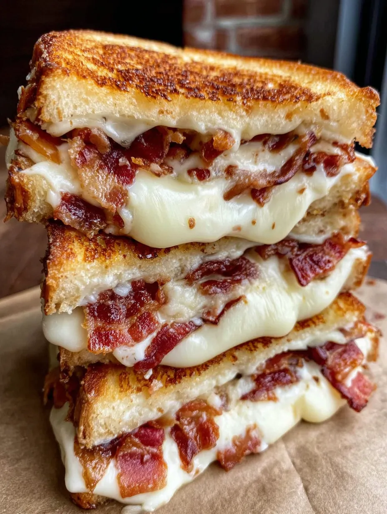

Triple Cheese Bacon Melt

Description
Delcious and easy to make, this recipe is great for anyone looking for a quick treat.
Enjoy the cheesey goodness!
Ingredients
- 6 Slices of Bread
- Bacon Strips
- 3 Slices of Provolone cheese
- 3 Slices of Cheddar Cheese
- 3 Slices of Monterey Jack Cheese
- Butter
Steps
- Take cheeses out of fridge and let sit for 15 minutes.
- Preheat oven to 400F and cover baking sheet in aluminum foil.
- Arrange bacon strips on baking sheet and cook in oven for 15-20 minutes.
- Once deeply golden, remove from oven and allow to cool and crisp.
- Spread butter on each side of bread slices.
- Place 3 slices of bread into skillet and layer 1 of each cheese onto each slice.
- Put 2 slices of bacon on top.
- Turn burner to "4" and grill the sandwiches, making sure each side is cooked.
- Remove from skillet and let cool for a few minutes.
- Cut sandwiches in half and serve!